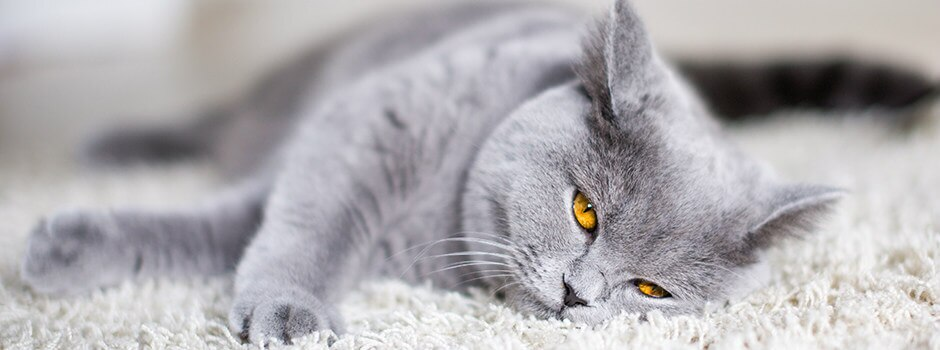

Кошки – это удивительные, хитрые и очень умные создания. Живут они с человеком уже много столетий, но всё равно как бы сами по себе. Не зря про них говорят, что кошки гуляют сами по себе. Это правда! Я вам расскажу об этом.
У нас было 5 кошек:
Сейчас у нас живет кошка Маруся, это её полное имя. Я же её ласково называю Мася.

Она очень красивая. Серенькая и пушистая, глаза зелёные. Она нравится всем моим друзьям и подружкам. Но не этим удивительна Мася. Она необычна своим своевольным характером. Любит она только специальный корм для кошек. Мы покупаем ей только вот такой корм Whiskas. Никак не признает свою миску на кухне. Очень любит гулять на улице и не успокоится, пока её не выпустят гулять. На улице Маруся себя в обиду не дает! Если увидит приближающуюся собаку, то выгибает спину дугой, хвост трубой и начинает угрожающе шипеть. Близко подойти не решается ни один пёс, все обходят её стороной.
Недавно у неё родились котята. Они очень милые и неуклюжие. Маруся заботится о них: кормит, умывает, следит за ними. Сначала котята жили на кресле на специальной подстилке, но потом, когда они немного подросли, я перенесла их в другое место. Но не тут то было! Мама Маруся тут же перенесла их обратно, на кресло! Так было не один раз. Спорить я с беспокойной кошкой-мамой больше не стала, оставила их на излюбленном месте. Марусе очень не нравится, когда мы берём котят на руки, сразу начинает тревожно мяукать и ходить вокруг. Конечно, котят мы сразу возвращаем на прежнее место, ведь нельзя тревожить маму-кошку.
Я очень люблю Масю, без неё было бы скучно и неуютно в доме. Наша кошка - настоящий член семьи, и мы к ней так и относимся, потому что "Мы в ответе за тех, кого приручили".